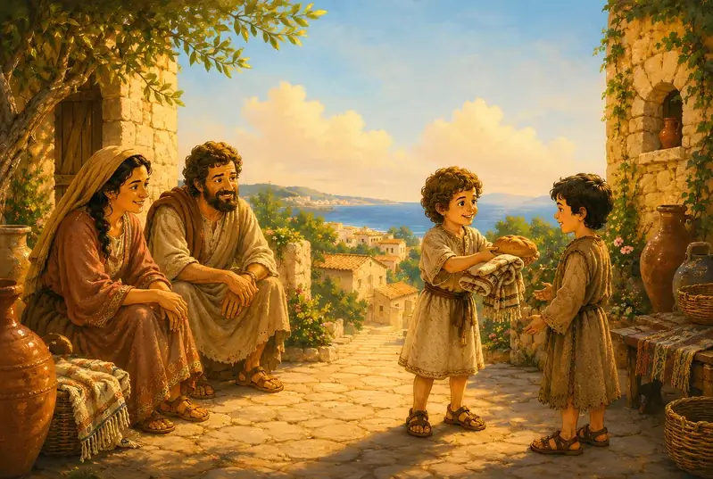
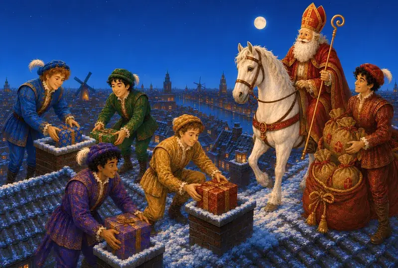
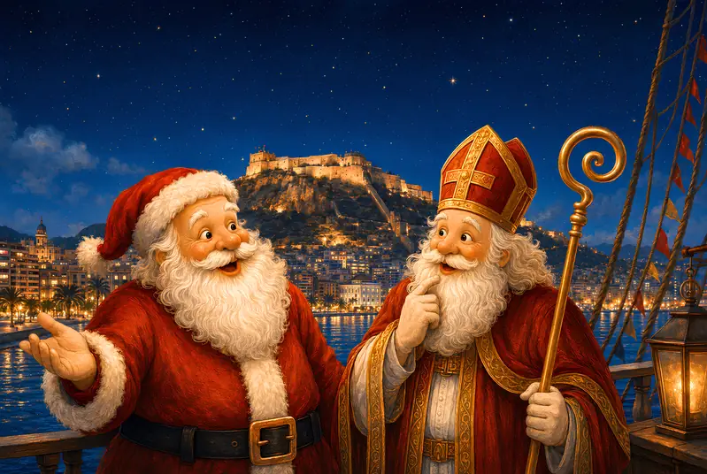
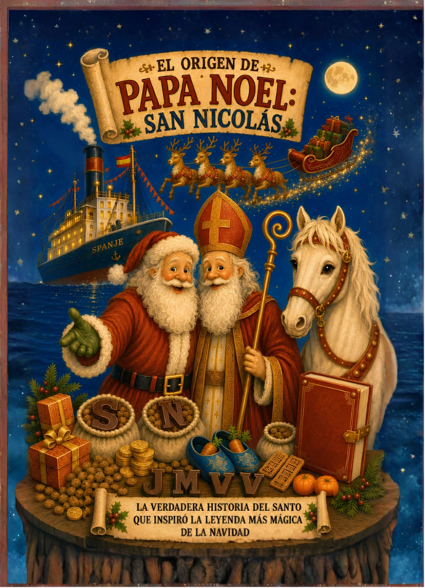

Una historia llena de generosidad, estrellas y regalos.
Antes de convertirse en leyenda, Nicolás fue un niño que descubrió la alegría de compartir. Con el paso del tiempo, su bondad cruzó mares y fronteras hasta llenar de ilusión los puertos, los tejados y las noches de invierno.

Un niño que aprendió a compartir.
Nicolás descubre muy pronto que la mayor riqueza consiste en ayudar a quien lo necesita y regalar esperanza sin esperar nada a cambio.
Un barco parte bajo las estrellas.
La tradición cuenta que Sinterklaas vive en España. El cuento imagina su hogar en Alicante y un puerto iluminado donde comienza cada nueva aventura.

Tejados, chimeneas y zapatos preparados.
San Nicolás y los jóvenes Pieten recorren la noche llevando pequeños regalos, dulces y sonrisas mientras su caballo blanco los acompaña.

De San Nicolás a Papá Noel.
La generosidad de Nicolás atravesó siglos y países. Con nuevas costumbres y nuevos nombres, aquella misma ilusión ayudó a dar forma a Papá Noel.
Esta primera parte está pensada para todos los públicos. Más abajo encontrarás una zona desplegable +12 con fuentes, matices históricos y la separación detallada entre tradición, recreación y ficción.
Descubre la historia antes de la leyenda.
El origen de Papá Noel: San Nicolás convierte este viaje en un cuento ilustrado sobre generosidad, empatía y la magia que une Alicante con una tradición europea.
VER EDICIONES Y COMPRAR →
La tradición, de un vistazo.
¿Cuándo se celebra Sinterklaas en Países Bajos?
La temporada comienza con la llegada a mediados de noviembre. La noche principal de regalos, Pakjesavond, es el 5 de diciembre; la festividad tradicional de San Nicolás es el día 6.
¿Cómo llega Sinterklaas?
Según el folclore neerlandés, llega desde España en un barco de vapor y después recorre las localidades sobre un caballo blanco.
¿Qué dejan los niños en el zapato?
Suelen dejar un dibujo, una carta o una zanahoria para el caballo. Cantan canciones y esperan encontrar después un pequeño regalo, una letra de chocolate o dulces.
¿Sinterklaas y Papá Noel son exactamente el mismo personaje?
No. Comparten raíces vinculadas a San Nicolás y a la entrega de regalos, pero su apariencia, fechas y costumbres son diferentes. La tradición neerlandesa influyó en la evolución de Santa Claus.
+12Historia, tradición y fuentesLa parte más realista y detallada para lectores mayores, familias curiosas y adultos.
¿De dónde viene San Nicolás?
La respuesta cambia según hablemos del personaje histórico, de sus reliquias o de la tradición neerlandesa. Distinguir esas tres capas permite entender la leyenda sin confundirla con una biografía.
Nicolás nació, según la tradición, en Patara y fue obispo de Mira, ambas en la actual Turquía. Los documentos contemporáneos son escasos, pero su memoria quedó unida a la ayuda a niños, marineros y familias vulnerables.
En 1087, reliquias atribuidas al santo fueron trasladadas a Bari. Por eso gran parte de Europa occidental lo conoce como San Nicolás de Bari, aunque ejerciera como obispo en Mira.
En el folclore neerlandés, Sinterklaas vive en España y llega por mar. El motivo exacto no tiene una explicación documental única: es una tradición formada y transformada durante siglos.
La llegada abre semanas de expectación.
De España a los Países Bajos, en barco de vapor
A mediados de noviembre, la tradición representa a Sinterklaas llegando desde España en un barco de vapor. Una ciudad acoge la entrada nacional y muchas localidades celebran su propia intocht, con música, desfiles y familias esperando en el puerto o las calles.
Una vez en tierra, aparece con vestimenta de obispo y continúa el recorrido sobre un caballo blanco. El barco de vapor y buena parte de la iconografía moderna se popularizaron en el siglo XIX.
La intocht
La llegada pública marca el comienzo de la temporada de Sinterklaas y convierte al puerto en un gran escenario familiar.
Schoen zetten
Los niños dejan un zapato cerca de la chimenea, cantan y suelen añadir una zanahoria o heno para el caballo. A la mañana siguiente pueden encontrar un pequeño regalo o dulce.
Pakjesavond
La noche del 5 de diciembre reúne a familias y amigos para abrir regalos, leer poemas rimados y descubrir envoltorios creativos llamados surprises.
6 de diciembre
Es el día tradicional del santo. Tras la gran noche de regalos, el relato cuenta que Sinterklaas regresa a España.
Cada objeto cuenta una parte de la tradición.
La mitra y el báculo
Recuerdan que Sinterklaas procede de la memoria de un obispo cristiano, no del aspecto moderno de Papá Noel.
El barco
Convierte su llegada en un viaje colectivo y visible. También enlaza al santo protector de los marineros con los puertos neerlandeses.
El caballo blanco
Permite a Sinterklaas recorrer calles y tejados en el imaginario popular mientras sus ayudantes reparten los regalos.
El zapato y la chimenea
Representan la entrega nocturna y secreta: un gesto pequeño que conserva la idea de ayudar sin buscar reconocimiento.
Poemas y letras de chocolate
Personalizan cada regalo. Las letras suelen corresponder a la inicial del destinatario y los poemas mezclan cariño y humor.
Pepernoten y dulces
Galletas especiadas, mazapán y monedas de chocolate forman parte del ambiente compartido durante las semanas de celebración.
¿Quiénes son los Pieten?
Los Pieten ayudan a preparar y repartir regalos, entretienen durante los desfiles y, en el relato actual, entran por las chimeneas. Su representación ha cambiado con el tiempo. La caracterización histórica conocida como Zwarte Piet está vinculada a estereotipos raciales y ha provocado un amplio debate social; muchas celebraciones contemporáneas utilizan roetveegpieten, ayudantes con manchas de hollín, o representaciones diversas.
¿Vive Sinterklaas realmente en Alicante?
La tradición neerlandesa afirma que Sinterklaas llega desde España, pero no existe una única explicación histórica aceptada sobre el origen de esa idea ni un puerto universal e invariable. Alicante mantiene y divulga una conexión popular con esta leyenda.
El cuento toma esa conexión como punto de partida creativo: imagina que San Nicolás vive en Alicante y zarpa desde allí cada año. Ese viaje, sus personajes y sus aventuras pertenecen al universo narrativo del libro.